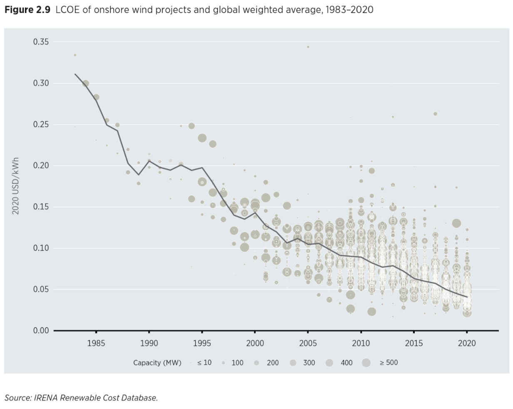

Carbon neutral transport fuels cost-competitive with fossil fuels
In the 2030s, we will start to see transportation fuels produced directly from basic molecules - hydrogen and carbon dioxide (CO2) - at a commercial scale. As the price of energy, green hydrogen and CO2 continue to fall, we will reach the point where we can make any fuel we want - aviation fuel, gasoline, or diesel - for less than the cost of refining fossil fuels.
There are many technology paths to this outcome. Carbon dioxide, carbon monoxide, and hydrogen can be fed to microbes that produce ethanol through a process called gas fermentation. Electrochemical processes convert CO2 into carbon monoxide (CO), methanol, or ethanol using electricity and chemical catalysts. Other thermocatalytic processes use chemical catalysts and heat to convert CO2 to ethanol or syngas. Once the CO2 has been turned into syngas or ethanol, known chemical processes can be used to build up bigger fuel molecules through the Fischer Tropsch process (for syngas) or alcohol-to-jet.
